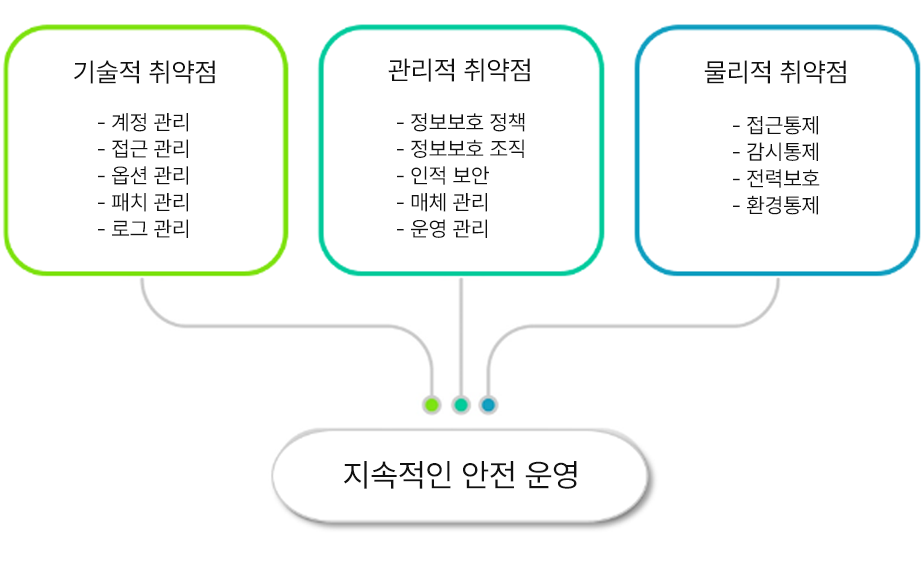

취약점 진단관리는 왜 필요할까요?
정보보호 관련 법규 및 컴플라이언스는 점점 강화되고 있습니다.
강화되는 보안 준수사항에 대한 취약점 대응 방안이 필요합니다.
법적 보안 준수와 국내 컴플라이언스에 100% 충족과 대응이 가능해야 합니다.
내부의 전문인력 부족과 취약점 관리 사이클 운영 부재로 신속한 취약점 조치의 어려움이 있습니다.
이제는 BingoCVM으로 원스톱으로 해결해보세요.
침해 사고 예방
지속적인 해킹 위협과 서비스 환경 변화로 인해 각종 피해 사례가 증가하고 있어,
침해사고 예방을 위한 취약점 조기 진단관리가 필요합니다.
자산 인프라
- OS 서버
- 데이터베이스
- WEB/WAS
- 네트워크
- 보안장비
취약점 발견
-기술적 취약점
- 관리적 취약점
- 물리적 취약점
- CVE(벤더) 취약점
정보 수집 행위
- 정보 시스템의 기술적 취약점
- 관리적 정책의 부재
- 물리적 환경의 취약
취약점 접근
- 공격 프로세스 진행
- 접근 정보 획득
- Exploit을 위한 준비
- 의도한 공격 발생
침해사고 발생
-개인 정보 유출
- 데이터 유출/변조/삭제
- 정상적인 서비스 방해
- 통제 불능 상태
컴플라이언스 대응
정보보호 관련 법규 및 컴플라이언스가 강화되고 있으며, 정보시스템에 대한 상시적인 취약점 진단 및 조치를 수행하도록 요구하고 있습니다. 정보통신기반 보호법, ISMS-P, ISO27001 등 법규
요구사항 및 정책 준수로 신뢰성 확보가 가능해야 합니다. BingoCVM은 주요 정보통신기반시설 취약점 진단 항목에 의거하여 기술적취약점, 물리적 취약점을 진단하고 관리할 수 있으며, 기술적
취약점 진단 결과 및 CVE코드(알려진 취약점 코드) 상시 모니터링 기능을 제공합니다.
진단 자동화
약점 진단 자동화는 위협에 대한 신속하고 정확한 대응 및 체계적인 관리를 제공합니다.
수동 업무를 최소화하여 오탐/미탐 발생 가능성을 줄이며 진단 비용 및 시간을 절약합니다.
통합관리
취약점 통합 관리를 통해 시스템 관리자의 업무 효율성을 향상시키며,
IT 시스템의 안정적 운영 및 사고 예방을 지속적으로 보장받을 수 있습니다.
